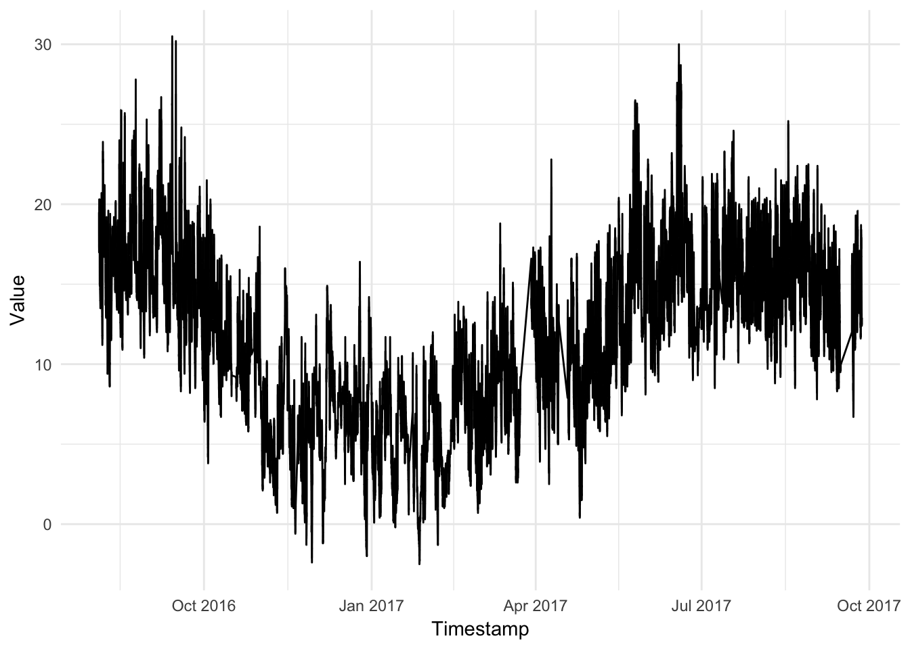
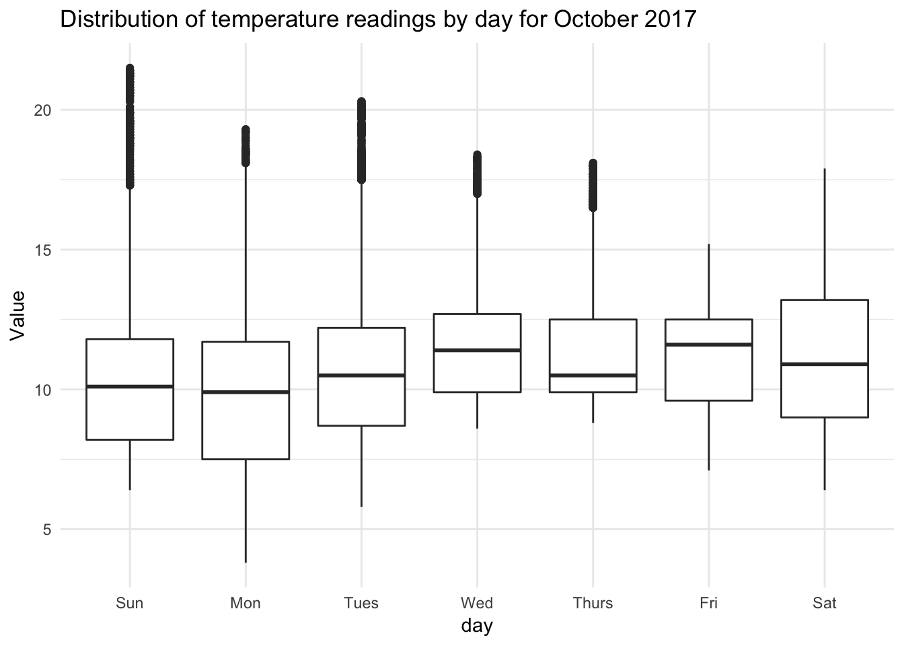
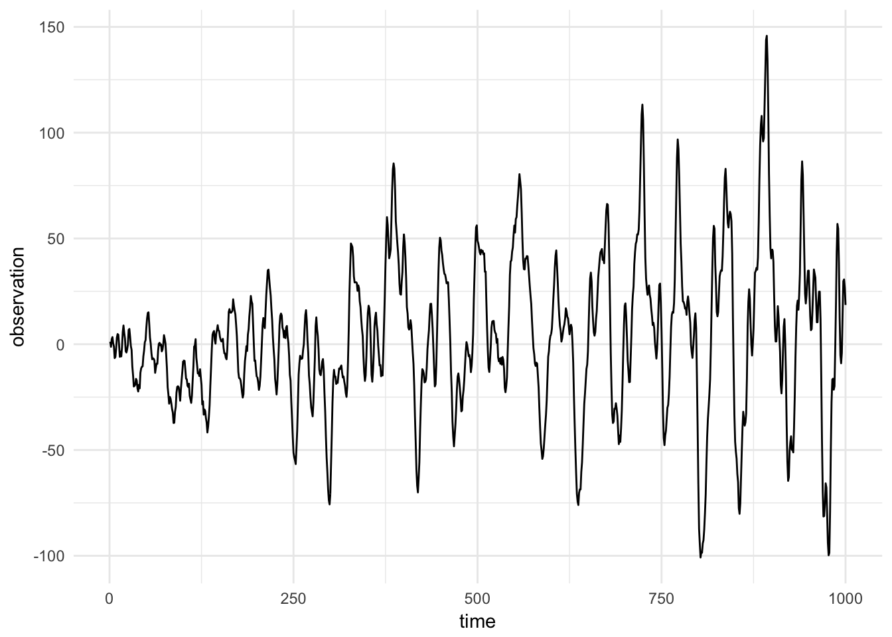
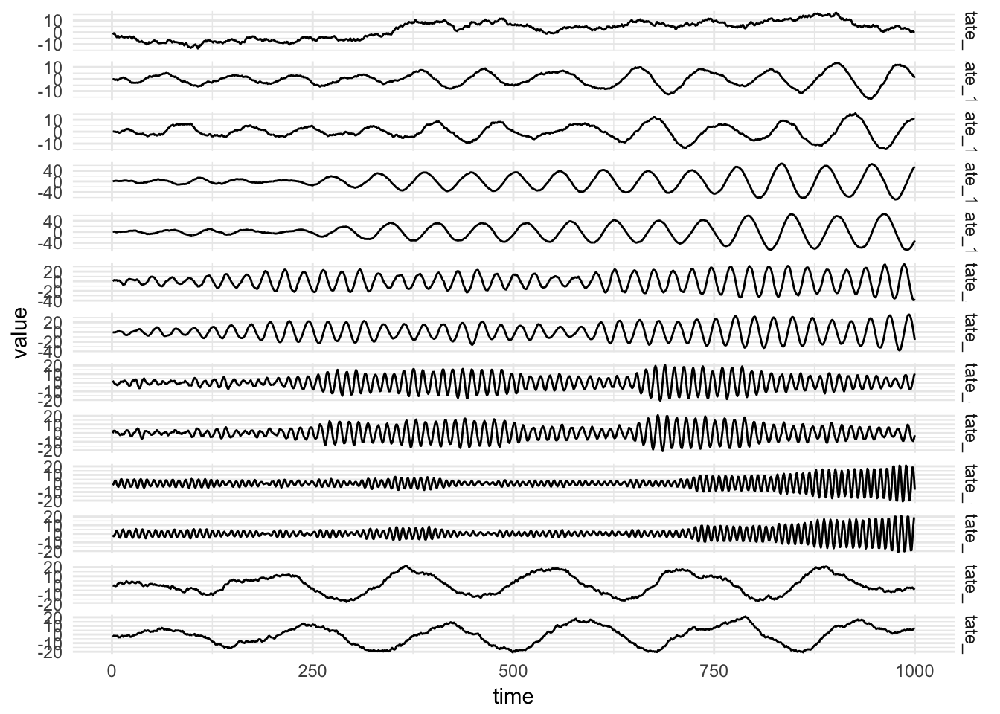
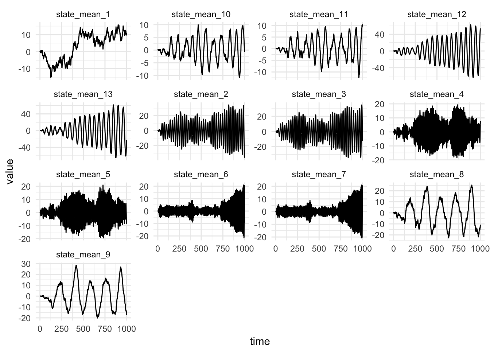
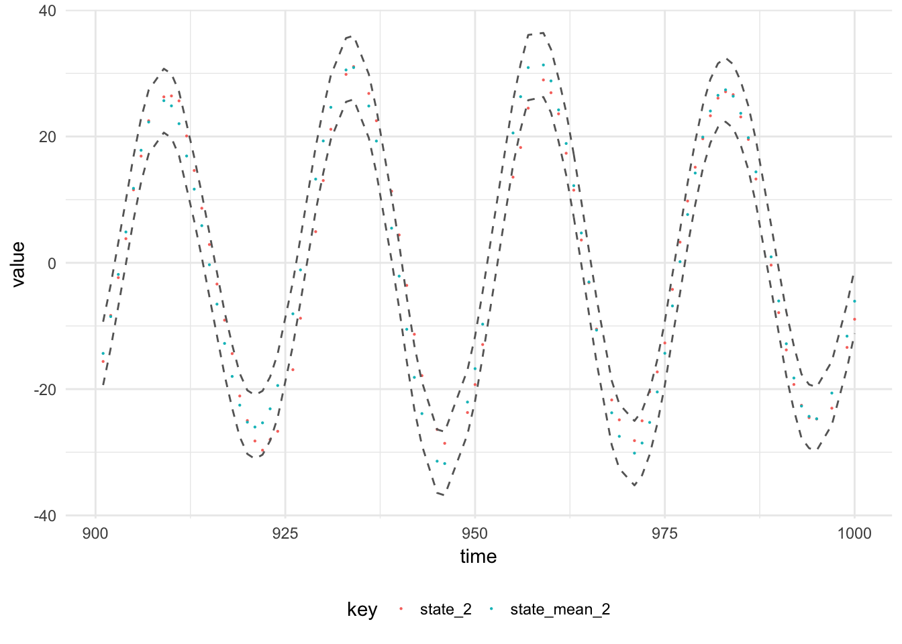

The figure below shows measurements of temperuate from a sensor in the Urban Observatory.

The temperature data is observed irregularly, the data is supposed to arrive every minute, but network connectivity issues affect the transmission of the data resulting in lost observations. In order to model this process accurately, we can use a continuous time, continuous state space dynamic linear model:
\[\begin{align*} Y(t_i) | \textbf{x}(t_i) &= F(t_i) \textbf{x}(t_i) + v(t_i), &v(t_i) &\sim \mathcal{N}(0, V),\\ \textbf{X}(t_i) | \textbf{x}(t_{i-1}) &= G(\textrm{d}t)\textbf{x}(t_{i-1}) + \textbf{w}(t_i), &\textbf{w}_t &\sim \textrm{MVN}(0, W \textrm{d}t),\\ \textbf{X}(t_0) &\sim \textrm{MVN}(m(t_0), C(t_0)). \end{align*} \]
Where the latent state, \(\textbf{X}(t)\), is a \(p\) dimensional vector and the system evolution matrix \(G(\textrm{d}t)\) is a \(p \times p\) square matrix which depends on the time difference between \(t_i\) and \(t_{i-1}\) and \(\textbf{w}(t_i)\) is \(p\)-dimensional mean-zero Normal white noise. \(F(t_i)\) is a possibly time dependent \(1 \times p\) matrix, \(v(t_i)\) is scalar mean-zero Normal white noise representing the measurement noise. The initial distribution of the latent state is multivariate normal with static parameters \(m(t_0)\) and \(C(t_0)\).
The temperature is seen to have strong daily and yearly seasonality, but weekly seasonality can also be seen in the figure below showing the distribution of temperature measurements for each day of the week:

The yearly seasonality can be modelled using a linear-trend, this is a pragmatic decision as there is only one year of data hence the parameters of a yearly seasonal model will be difficult to identify with a limited amount of data. The model is a composition of a linear trend model and two seasonal models (one for daily seasonality, the other for weekly seasonality). We first consider the linear trend model and identify the transition model in continuous time for this model.
The linear model has a 1-dimensional latent state, \(x(t)\), the observation and system evolution matrix are \(F(t) = 1\), \(G(t) = 1\), \(\forall t\). The transition kernel for the latent-state can be written as:
\[p(x_{t_i} | x_{t_{i-1}}, W) = \mathcal{N}(x_{t-1}, W\textrm{d}t)\]
This is the solution to a stochastic differential equation (SDE) for brownian motion:
\[\textrm{d}X(t_i) = W\textrm{d}B(t_i).\]
Where \(B\) is standard brownian motion.
The seasonal model has a 2\(h\)-dimensional state space, where \(h\) is the number of harmonics in the seasonal model. The standard seasonal model consists of a block-diagonal \(G\) matrix containing rotation matrices on the diagonal. The form of the rotation matrix is:
\[R(\theta) = \begin{pmatrix} \cos(\theta) & -\sin(\theta) \\ \sin(\theta) & \cos(\theta) \end{pmatrix}.\]
The angle of rotation depends on the period, \(T\), such that a full rotation is made in each period. The angle of the rotation is then \(\theta = 2\pi / T\). This means at each application of the matrix, the state is “rotated” a further \(2\pi/T\). This is fine if it is required to only know the distribution of the latent state at whole numbers of the period, but the rotation can’t be applied to a half timestep. In the motivating temperature example the daily seasonal model can be said have a period of \(T = 24\) if the timestamp is in increments of hours. The timesteps are mostly in increments of minutes, however measurements are irregular. It would be useful if there was a way to know the distribution of the latent state at an arbitrary timestep in the future, \(t + \delta t\).
One possible way to do this is to consider \(\delta t\) to be a small time step and have an infinitessimal rotation. If \(\theta\) is very small then the trigonometric functions can be approximated by their Taylor expansion up to the first order terms, ie. \(\cos(\theta) = 1\) and \(\sin(\theta) = \theta\). Then a small rotation of a vector \(\textbf{u} = (x, y)\) is given by \((I + A\textrm{d}\theta)\textbf{u}\), where \(A\) is the skew symmetrix matrix:
\[A = \begin{pmatrix} 0 & -1 \\ 1 & 0 \end{pmatrix}.\]
The many infinitessimal rotations can be chained, one advantage of infinitessimal rotations is that they are commutative. But why is this necessary?
Another consideration is since the evolution of the state depends on the time increment, \(\textrm{d}t\), then the angle of rotation can simple depend on the time increment in the same units as the time \(t\). Then the angle of rotation is: \(\omega = 2\pi(\textrm{d}t \operatorname{mod} T) / T\).
Assume the last observation of the process was at time \(t_i\), and we have the posterior of the state at time \(t_i\) which is described by the mean and variance of the distribution, \(m(t_i)\) and \(C(t_i)\). Then to update the posterior at the time of the next observation \(t_{i+1}\):
where, \(K(t) = R(t) F^T(t) Q(t)^{-1}\) and \(e(t) = y(t) - f(t)\). We can prove this using results about the Gaussian distribution:
Consider the temperature model discussed above, here is a simulation from the model:


Now we can perform filtering using the Exact filtering algorithm:
